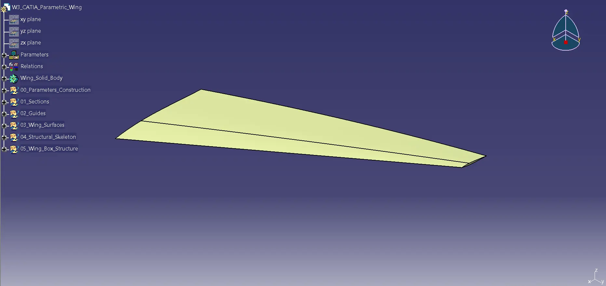
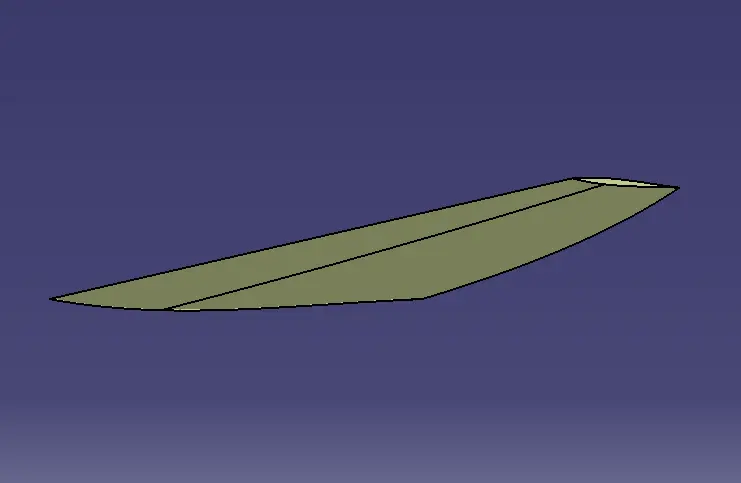
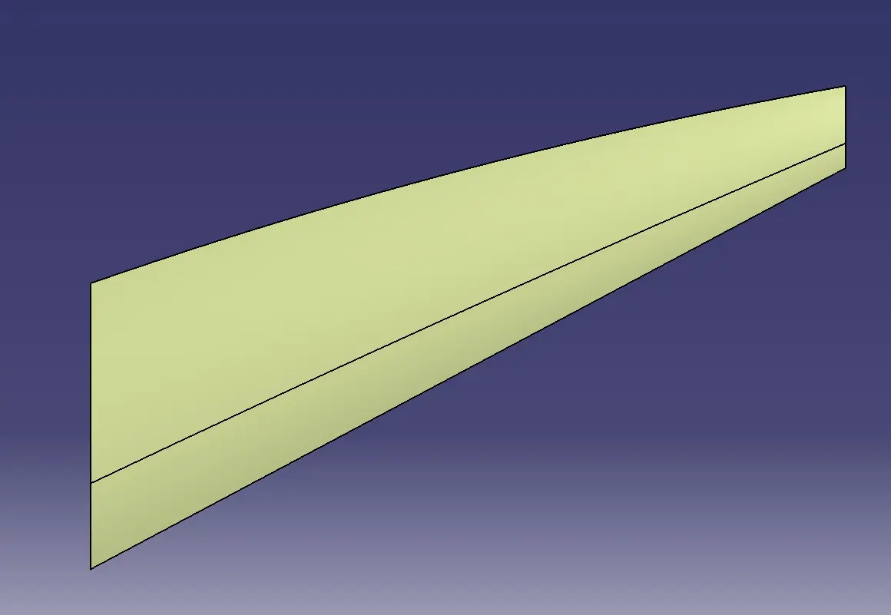
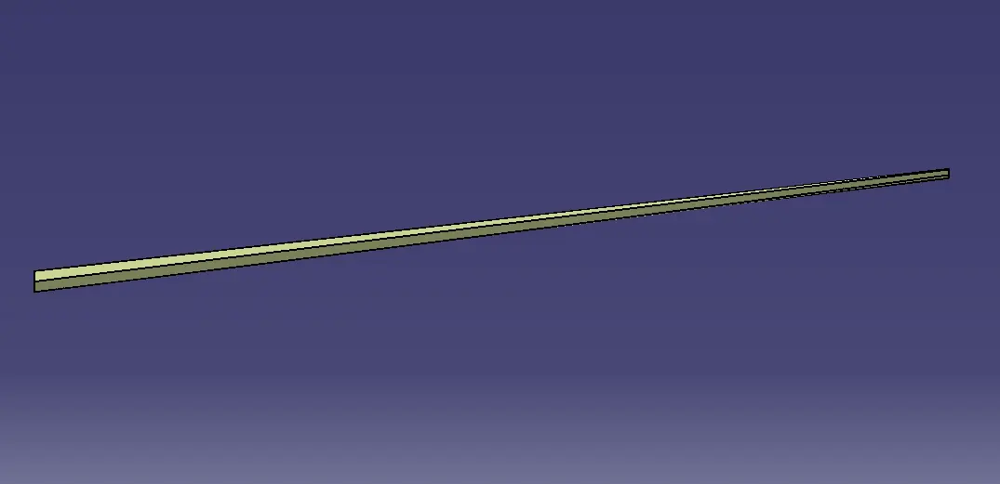
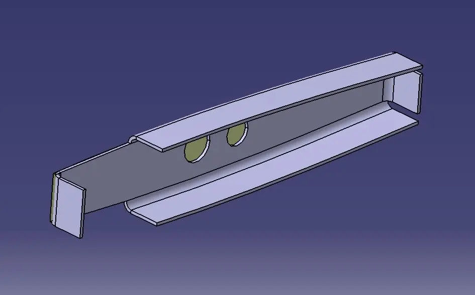
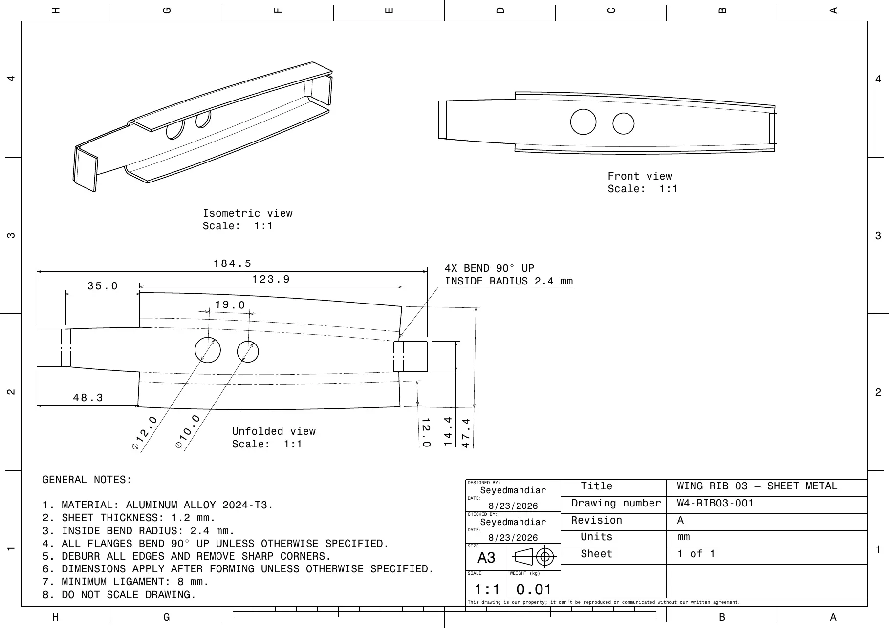

Parameters and construction geometry
Centralized dimensions and relations establish the governing planform and section placement.
Knowledgeware · surface design · sheet metal
A design-intent study that connects parameter-controlled wing geometry to an organized surface model, structural skeleton, wing-box definition, and a production-oriented sheet-metal rib.

Overview
The project focused on creating a wing as a controlled engineering system rather than a single frozen shape. Governing parameters and relations feed the construction geometry, section definitions, guide curves, and outer surfaces.
The feature tree was divided into clearly named groups for parameters, sections, guides, surfaces, the structural skeleton, and wing-box structure. This keeps upstream aerodynamic geometry separate from downstream structural features while maintaining associativity between them.
Model architecture
Each stage consumes controlled references from the stage before it, making design changes easier to inspect and reducing dependence on manually recreated geometry.
Centralized dimensions and relations establish the governing planform and section placement.
Spanwise profiles and continuous guides control the wing's changing chord, sweep, thickness distribution, and twist.
Multi-section surface construction connects the profiles into a continuous aerodynamic form that can be closed into downstream solid geometry.
Internal references are derived from the wing geometry so spars, ribs, and the box remain aligned with the outer form.
A representative rib was formed as a sheet-metal component and documented with unfolded geometry, bend instructions, and material notes.
Parametric geometry
The views below isolate the principal geometric behaviours: taper and sweep in plan view, the thin spanwise section, and the three-dimensional transition between root and tip.



Structural translation
The project continues beyond the outer surface. A representative internal rib demonstrates how associative wing references can support a manufacturable sheet-metal component.

Manufacturing documentation
The drawing combines isometric and front views with a dimensioned flat pattern. Material, thickness, bend radius, bend direction, minimum ligament, edge treatment, and post-forming dimension requirements are stated explicitly.

Engineering outcomes
Project file